Introdução ao...
Por Anchieta Júnior
Pré-requisitos
O que eu devo saber para começar a estudar Angular?
- HTML
- CSS + algum Framework Front-end (Bootstrap, SemanticUI, Material Design Lite, etc)
- API's RESTful
- JSON
- Javascript
Boa pergunta
Onde e quando utilizar Angular?
Projetos web
- Sites
- Blogs
- Sistemas complexos
Plunker
Start
Como faço pra começar um projeto Angular?
Vai parecer mentira
É isso ai. :)
Diretivas
What?
"Instrução ou conjunto de instruções para a execução de um plano, uma ação, um empreendimento etc"
As diretivas do Angular "turbinam" o HTML e deixam disponíveis novos comportamentos para os elementos em uma página web
ngApp
Nossa primeira diretiva
Adicionando a diretiva ng-app e atribuindo um nome
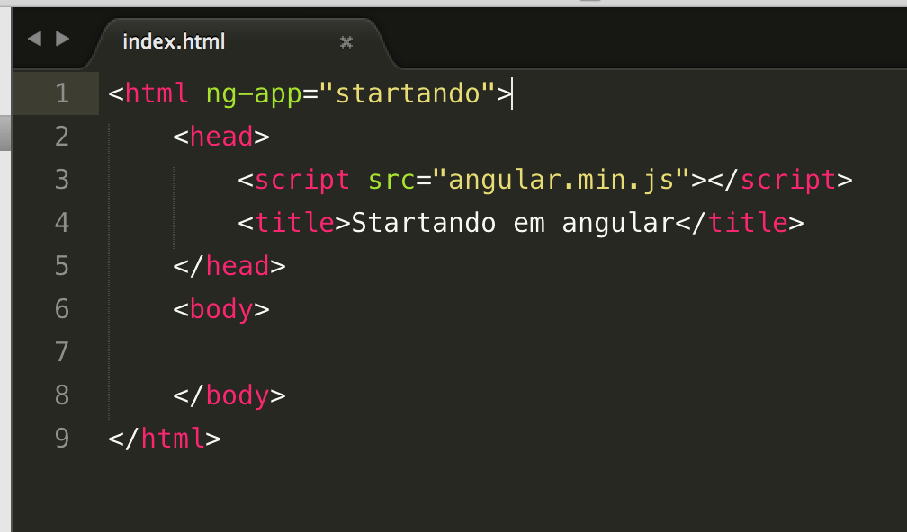Erros, console e feedback.
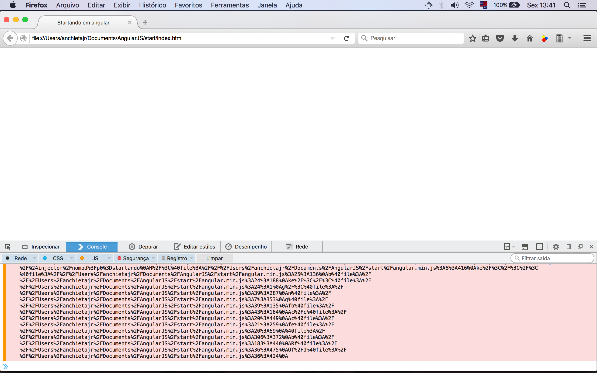Adicionando arquivo js e ativando nossa app
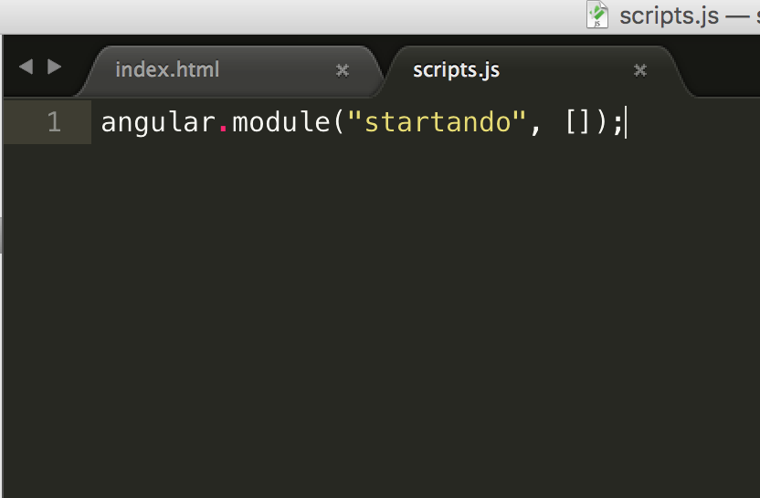Verificando os erros novamente
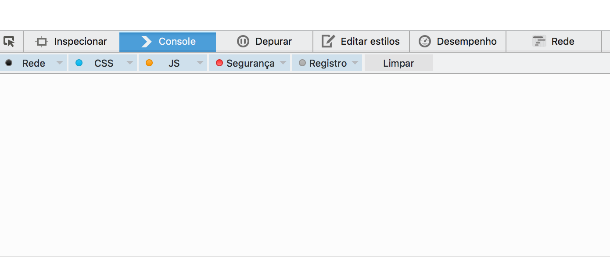Expressions
Teste simples.
Utilizando "mustaches" em expressões
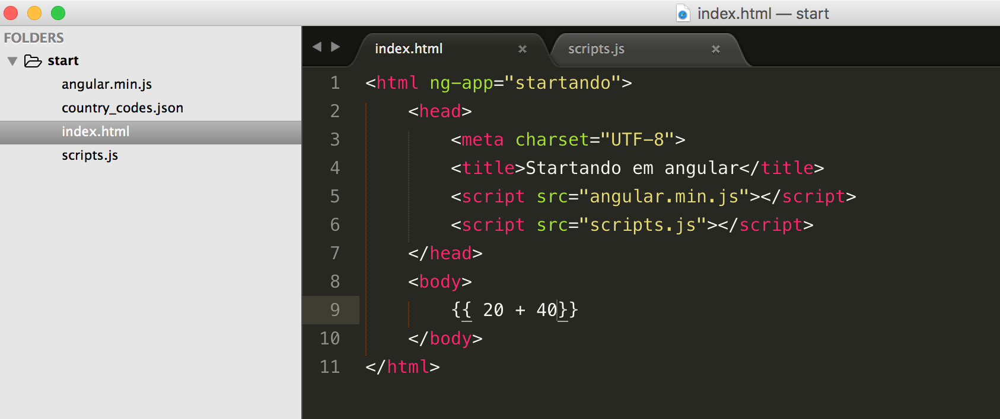Resultado
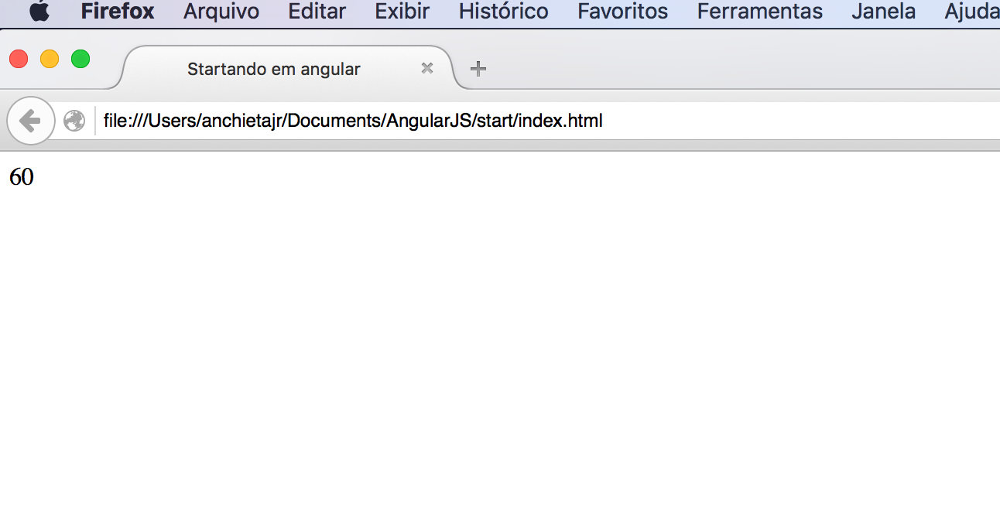ngController
Segunda diretiva e entendendo o MVC do Angular
MVC, MVP, MVVM...
MVW.
Model View e tanto faz
Model, Controller e Scope
Exemplo

Criando o controller, view e recebendo um valor
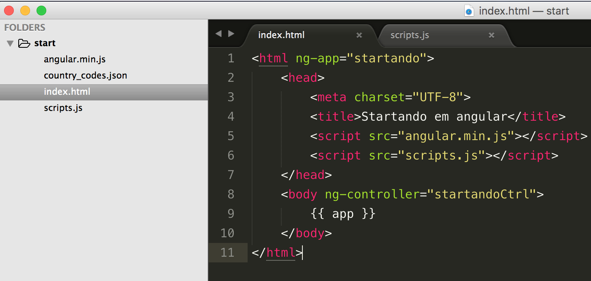
Definindo o controller, scope e nosso retorno
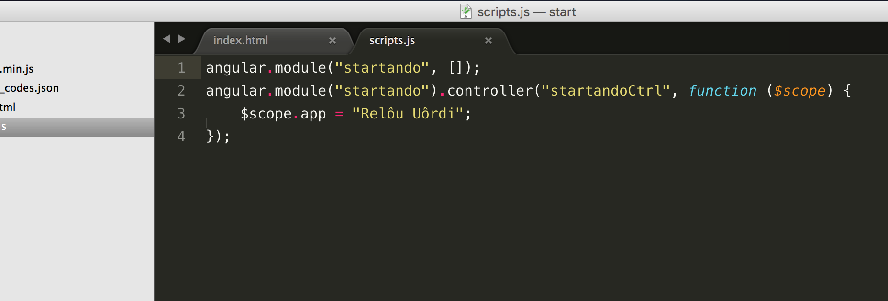
Resultado
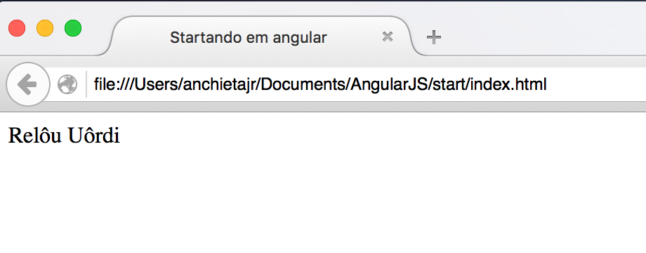ngrepeat
Lendo JSON e exibindo em uma tabela
Bootstrap
Adicionando bootstrap e melhorando a visualização
Importar para o projeto e chamada na página html
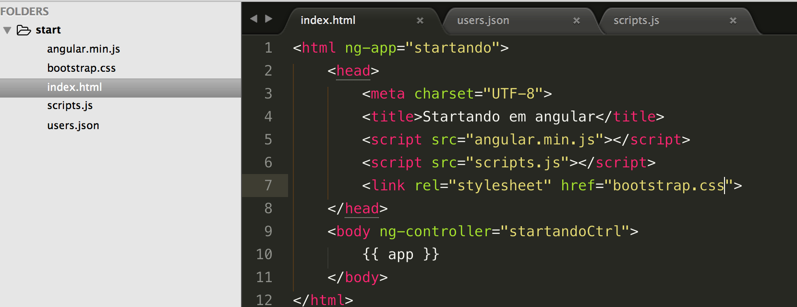Criando a estrutura da tabela.
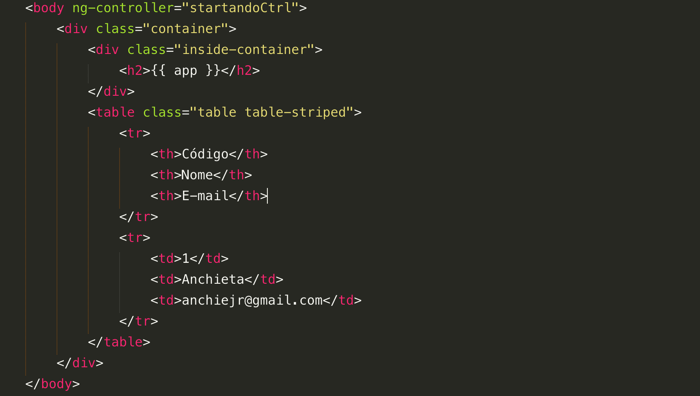Resultado.
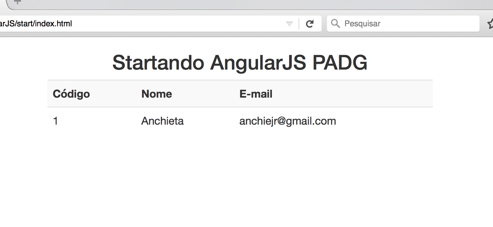Lendo o JSON users.json
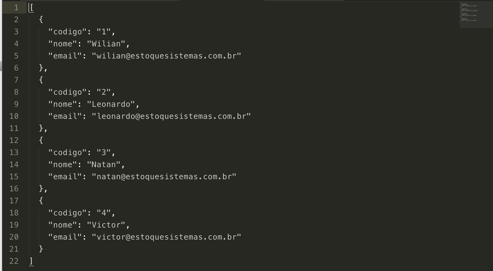Referenciando nosso arquivo users.json e passando seus dados para um array através de uma function
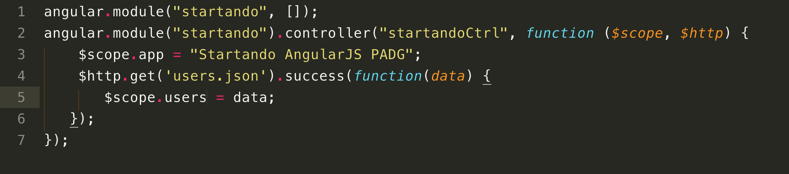Core Service $http
"Disponibiliza métodos de atalho, no qual o único requisito é a URL a ser processada."
ngrepeat
Exibindo os dados na nossa tabela.
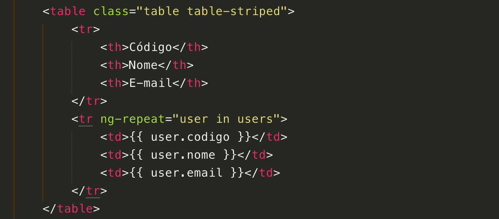Resultado
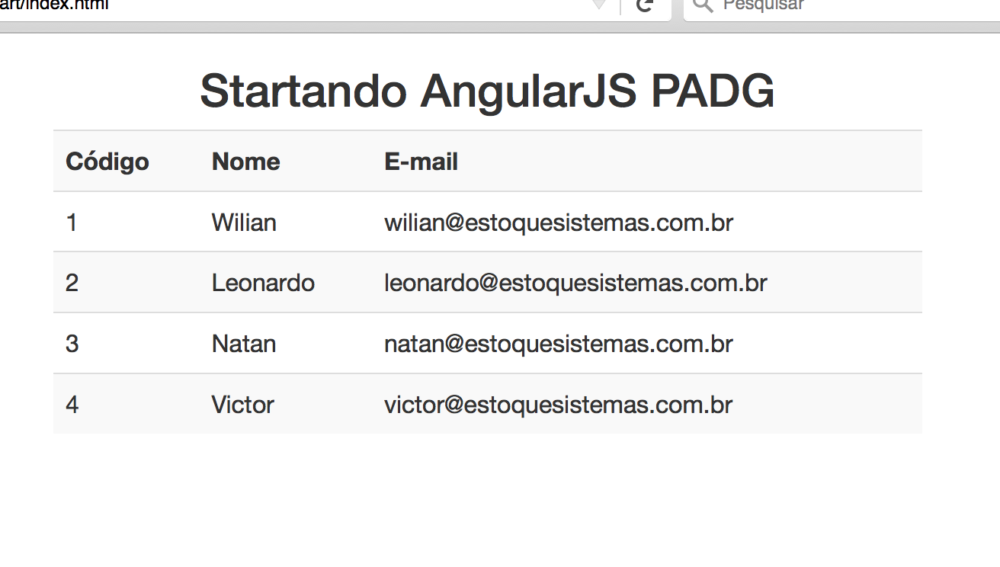Viajando na Maionese
O que poderiamos fazer com isso ?
Uma API que disponibiliza a lista de clientes ou usuários de uma grande coorporação
- Autenticação
- Adicionar um novo usuário ou cliente
- Excluir-lo
- Filtros de pesquisa
Referências
- Rodrigo Branas - Canal no Youtube
- Tableless - http://tableless.com.br/diretivas-angularjs-abas/
- Webcodegeeks - http://www.webcodegeeks.com/javascript/angular-js/angular-js-json-fetching-example/
- w3cschools - http://www.w3schools.com/json/